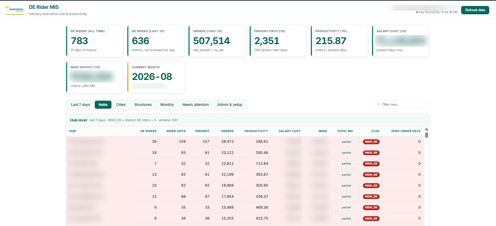
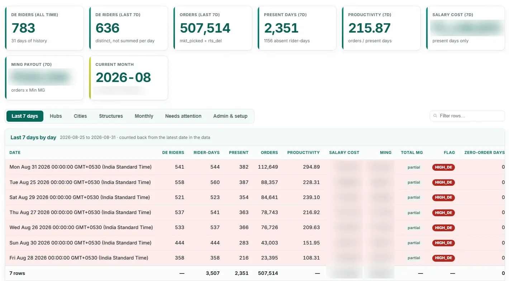

DE Rider MIS: Delivery Executive cost & productivity reporting
An automated reporting system that picks up a daily rider-data file of about 950K rows from Slack, keeps only the Delivery Executive (DE) riders, applies approved business rules and serves managers a secure dashboard. It was built entirely on free Google tools.
Problem
- DE rider cost and productivity reporting was done by hand in Excel.
- The daily export was 146–186 MB, with 770K–950K rows, and only about 0.6% of the rows were DE riders.
- Every day meant filtering, lookups and recalculation, with errors and no history kept.
Approach
- A Slack app picks up each daily file, and file-level plus row-level de-duplication means nothing is double-counted.
- A local streaming pre-filter works around Apps Script's file-size limit by keeping only the 20 approved DE pay structures.
- A rules engine matches the existing Excel formulas exactly, plus minimum-guarantee payouts by hub type, prorated salary, productivity, hub and zero-order flags, next-month projection and incremental burn.
- Managers edit formulas in a sheet tab, and a metric can't go live until its formula is approved.
Impact
- A daily manual Excel process becomes an automatic flow from Slack to dashboard.
- Every number traces back to an approved, auditable formula.
- All of August 2026 was backfilled: 15,054 DE rider-days.
- Live dashboard covering 780+ DE riders and about 5 lakh orders a week, with high-DE-hub and zero-order flags.
- It costs nothing to run: no paid hosting or database.
780+DE riders tracked
5 L+orders / week monitored
950Krows filtered daily
492 MB → 3 MBpre-filter
100+automated tests
₹0running cost

Engineering: 23 code files (~11,700 lines), more than 100 automated tests, 66 integrity checks, a CSV parser that handles quoted fields and mixed date formats, Slack request verification and 15 design documents. My role: requirements, data analysis, design, build, testing, documentation and stakeholder sign-off. Status: live in production. The dashboard has seven tabs: last 7 days, hubs, cities, pay structures, monthly, needs attention, and admin & setup.
Google Apps ScriptGoogle SheetsSlack Events & Web APINode.jsHTML / CSS / JSData modelling